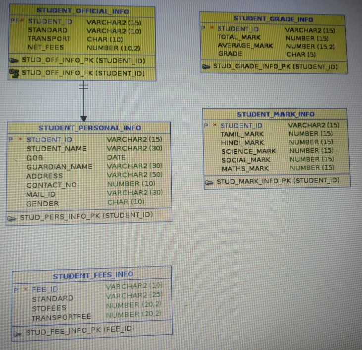
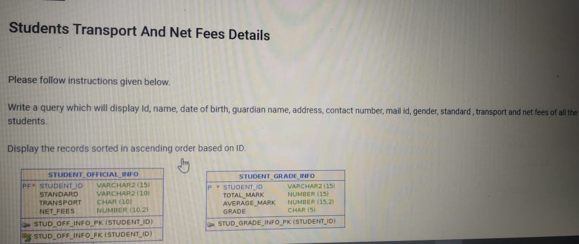
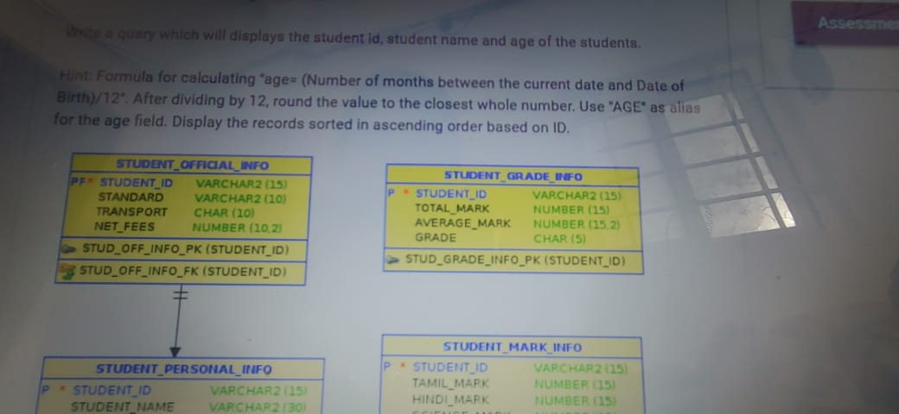
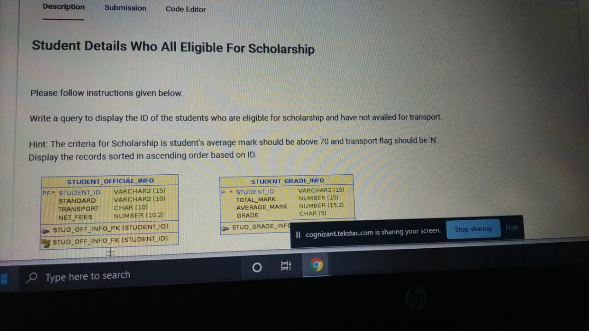
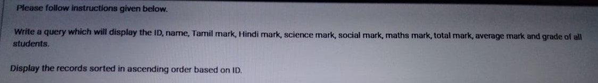

-- ----------------------------------------------------------------------------------------------------------------------------------------------------------------------------------------------------
-- STUDENT SCHEMA :
--------------------------------
-- 1) write a query to display the id of the students who are eligible for scholarship and have not availed for transport.
solu:)---
select s.student_id from student_official_info s join student_grade_info a
on s.student_id = a.student_id
where s.transport = 'N' and a.avg_mark >70 order by s.student_id;
--2) write a query to display the id, student name, Age of all students sort by id.
solu:)---
select student_id, student_name, round(months_between(sysdate,dob)/12) as "Age" from student_personal_info order by student_id;
--3) write a query which will display the id, name, tamil mark, hindi mark, science mark, maths mark, social mark, total mark, average mark and grade of all students.
-- Display records sorted in ascending order based on id.
solu:)---
select sp.student_id, sp.student_name, sm.tamil_mark, sm.hindi_mark, sm.science_mark, sm.social_mark, sm.maths_mark, sg.total_mark, sg.average_mark, sg.grade
from student_personal_info sp join student_grade_info sg on
sp.student_id = sg.student_id join student_mark_info sm on sm.student_id = sg.student_id
order by sp.student_id;
-- 4) write a query which will display id, name, date of birth, guardian name, address, contact number, mail id, gender ,standard, transport and net fees of all the students.
-- Display all the records sorted in ascending order based on id.
solu:)---
select soi.student_id, spi.dob, spi.guardian_name, spi.address, spi.contact_number, spi.mail_id, spi.gender, soi.standard, soi.transport, soi.net_fees
from student_official_info soi join student_personal_info spi on soi.student_id = spi.student_id order by spi.student_id;